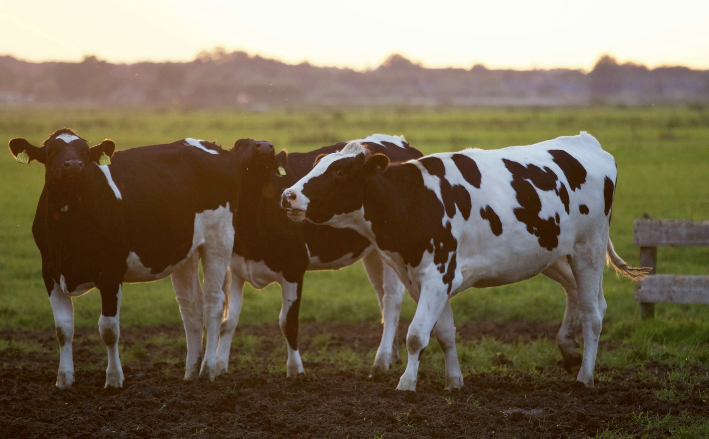

AgriLuntian combines “Agri,” meaning agriculture, with “Luntian,” the Filipino word for green, symbolizing life, growth, and abundance.
It reflects the fertile lands, thriving crops, and sustainable practices that define Philippine agriculture while also honoring the deep cultural connection between Filipino farmers and the land. The name represents not only productivity but also a commitment to eco-friendly farming, resilience, and the legacy of nurturing the environment for future generations.

What is AgriLuntian
An all-in-one digital platform designed to support and empower farmers by giving them easy access to agricultural knowledge, real-time data, and essential services. It connects farmers to valuable resources, helping them make smarter decisions, improve productivity, and build stronger linkages with support institutions.